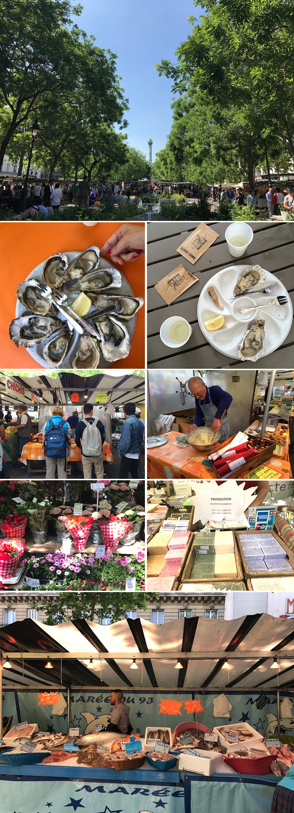
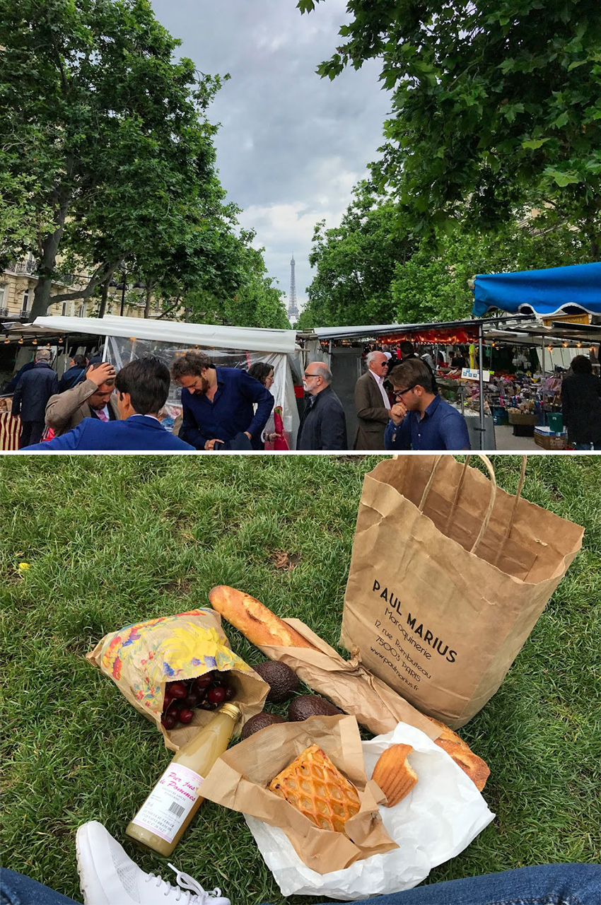
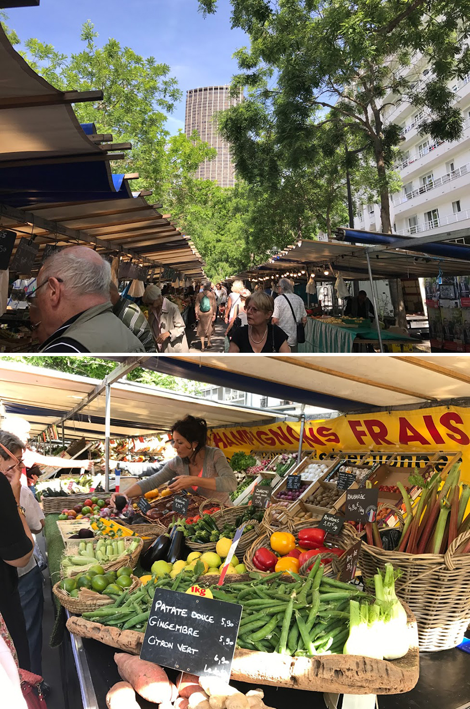
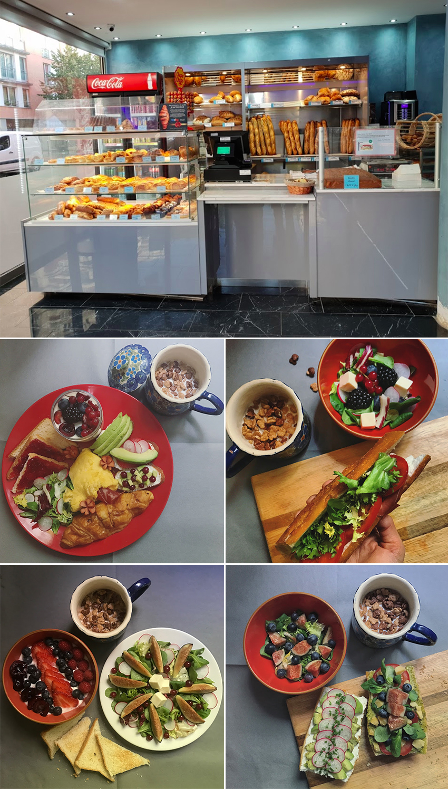
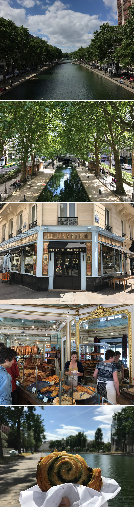

喜歡貼近生活去體驗一個城市：清晨從市集採購新鮮蔬果，體驗和台灣叫賣聲此起彼落的菜市場有什麼差別。由於巴黎正餐動輒10幾20歐起跳，每天午晚餐吃下來對一個背包客來講，實在很傷血本，於是我每周都會找個1~2天去市集採購，這樣就能自己做早餐，把早餐省下來的，讓午晚餐能心安理得吃更豐盛了！傳統露天市集販售的項目差不多都是蔬果、鮮花、奶酪起司、蝸牛、生蠔、紅酒、傳統甜點麵包、手作香皂、針織品、香包還有少數販售家用小工具；隨著環保意識的增長，全巴黎已經有3個有機市集，但價格也相對高出許多。巴黎寸土寸金是大部分市集為露天的原因之一：在前一天晚上搭建好棚子，農夫們隔天清晨再從產地運送到市中心販售，等結束營業後再恢復原狀，這種方式既不佔地、又鄰近家家戶戶，非常便利。雖然每個市集不是天天都有，不過全巴黎總共有65座流動市集坐落在寬廣的街道或廣場前，每天都有逛不完、不同風格的市集呢！目前最喜歡的是Marché Bastille 巴士底市集和Marché De Saxe-Breteuil 薩克斯市集。
|  |
Marché Bastille 巴士底市集只有周四與周日會舉辦，來到這邊必吃吉拿棒阿公現混麵粉、現揉、現壓、現切、現炸的吉拿棒，禮拜四阿公雖然沒有出來擺攤，但還是能吃到料多味美又價廉的可麗餅，或是20歐有找就有三樣不同種類生蠔配白酒，逛逛二手攤位、手作南法的馬賽皂與手工裁縫的童洋裝還有各式各樣攤販等著旅客去挖掘。事隔一年再訪，那位穿著波希米亞裝的婦人還是一樣坐在廣場前拉著不專業的二胡賺取她的外快。
|  |
Marché De Saxe-Breteuil 薩克斯市集是當地堪稱最美的假日市集，逛到一半抬起頭就能看見巴黎鐵塔。法國人之所以浪漫，連來買菜這種細節都不忘西裝打扮，這就是他們的日常。來逛市集的有些拖著菜籃車邊走邊看、也有帶著自己的小狗大狗一起出來散步的。我以為跟台灣菜市場一樣，想買什麼就站在攤位前跟老闆說，看大家站一排好像在物色什麼，站了好久終於有一位小哥跟我說要排隊喔～當下真的覺得不好意思但我完全沒有要插隊的意思，那位小哥嗓門又特大，等待的空檔，他問：妳是哪裡人？我拿出這幾天最常說的Je viens de Taïwan（我從台灣來的）！那位小哥很激動說他知道！台北嘛～瞬間隊伍前後左右連別攤的也轉過來看，感覺整個市集的人都知道我從台北來了，瞬間成為廣場上的焦點，看著其他阿姨叔叔們笑笑的看著我，我想我當下應該臉漲超紅。這趟買了一公斤的櫻桃、酪梨、長棍、甜點跟蘋果汁，第一次在市集採買也知道他們的規則了，當下腦波弱差點帶了一個菜籃車回家，好險有克制住。喜歡此起彼落的叫賣聲，讓我跟台灣的菜市場有些連結，每週至少一次都要來市集報到！
|  |
如果遇到下雨天則可以到位於巴黎富人住宅區，建築外觀看起來像是溫室花園的Marché Couvert de Passy 帕西村遮頂市集，販售的與有機市集大同小異，但它又以販售高級昂貴食材為特色、每一個攤販也都有獨自的布置風格，非常有趣可愛；Le Marché BIO de Raspail 哈斯拜爾市集就是當地知名的有機市集之一，逛著逛著抬起頭就能看見巴黎第二高樓：蒙帕納斯，聽說當地人不太喜歡這座建築，甚至開玩笑說：想俯瞰全巴黎美景，到蒙帕納斯眺望台就對了，因為看不到蒙帕納斯！但政府聽從民意，即將改建它的建築外觀成為一大面城市的鏡子，且預計將於2024年的巴黎奧運前完工。Couvert des Enfants Rouges 紅孩兒遮頂市集則是以異國料理為特色，餐桌都是以摩洛哥磁磚圖騰推砌而成，非常符合它異國的氣息，市集入口還有販售復古照片、明信片與郵票，對於喜歡蒐集古物控一定會喜歡！
|  |
住宿巷子轉角的那間烘焙坊，早上8點左右會出爐一批長棍麵包baguette，時間還沒到就會看到排隊人潮排到巷子角落來。巴黎人是最沒有耐心、最討厭排隊的，當一家店大排長龍就是產品好吃的保證。買一根可以配好幾餐的長棍回家，一定要趁新鮮出爐時先享用，因為不管是單吃、抹奶油加果醬、做三明治，剛出爐的酥脆口感跟隔夜後如人間凶器般乾硬的口感相差甚遠，不過微波加熱後吃起來的小麥香氣還是很濃郁的；住在巴黎西南方15區，每次要到市中心就得從輕軌轉乘地鐵4號線，在進車站前有一家樸實無華的烘焙坊，不過它卻有驚為天人的可頌！每次吃到的可頌不管冷的或熱的，都是酥脆口感又帶有濃郁奶油香，花1歐得到身心靈滿足，真值得～
|  |
位於聖馬汀運河附近，還有一家富有歷史的麵包店 Du Pain et des Idées，小小的店面時常大排長龍，從販售商品與店內擺飾就知道，一定是個很有想法的人！原來在時尚產業工作的Christophe Vasseur，心心念念著麵包烘焙，於是毅然決然轉換跑道，先從麵包學徒做起，蹲了三四年的時間，才終於在2002年找到這家1870年的舊麵包店自立門戶。保留了當時的裝潢，添增一些從二手市集的擺飾，因為對品質有所堅持，所以他只賣麵包不賣甜點，專心的投入在種類不多的麵包領域，果然在2008就拿到Gault Millau巴黎最佳麵包師的殊榮！這次經過很幸運買到鎮店之寶開心果巧克力蝸牛麵包，拎著Tiffany藍的紙袋散步到運河，從國中就很喜歡的《艾蜜莉的異想世界》，沿路走著電影情節歷歷在目，走到她打水漂的閘門，彷彿耳邊繚繞一首首手風琴樂音的主題曲，隨性地坐在河邊，享受它的寧靜配著期待已久的蝸牛麵包。